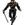

|

Carnath
Author of 5 Stories |
AN: Dear Readers. This fanfic originally belongs to 'Penguine'. I had been following it for a while, but finally got an update informing us all that she no longer wished to continue this fic. So after a brief convo with her, she has agreed to let me finish it, as it were. The first two chapters are hers, with some minor grammar and information fixes. I will try to stay in sync with her writing style and the way she's set the story so far. If you have any questions, feel free to e-mail me. Now on to the story.
Chapter 1
Akane sighed as she entered the study hall and found a seat. After settling herself in, she slumped her head down on her arms on the desk. This headache was simply not going away. On top of that, she was now starting to feel dizzy and sick to her stomach. Her body shivered. Add extremely cold to that list. She grumbled curses at that heating/air system that the school was always having problems with. Thought slowly slipped out of Akane's mind and within a couple of minutes of having sat down, she was fast asleep.
Ranma bounced into the study hall, happy as a lark. For once, he was having an absolutely perfect day. He'd discovered he'd gotten a 90 on his biology midterm. In geography, they'd had a party to celebrate the teacher's birthday. How much better could the day get? Ranma was so caught up in his musings that it was only when he'd sat down and turned to glance around the room that he noticed Akane asleep at her desk with her short black hair obscuring her face.
The boy frowned. It wasn't like Akane to fall asleep just like that. Braving possible retaliation from the hot-tempered girl, Ranma rose from his seat and stepped over to see what was wrong. He called her name, but got no response. Now definitely worried, Ranma knelt down and brushed her hair out of her face. It was then that he noticed the redness in her cheeks in contrast to the extremely pale complexion of the rest of her face as well as how incredibly warm her skin was to the touch. This girl was most definitely sick.
Ranma sighed. 'There goes my good day,' he thought to himself as he rose and went to find the study hall monitor. After having explained the situation to the monitor, then the principle, dodging a haircut in the process, Ranma finally got clearance to take Akane home and returned to her side.
Kneeling back down again, Ranma gently shook the girl in an attempt to wake her. Akane let out a small whimper but did not awaken. Ranma finally sighed and opted for a different approach. Some how, amazingly, he managed to fit Akane's bag inside his own. Then he flung his satchel onto his back. Kneeling once more, he swooped the slumbering tomboy up into his arms. Rising back to his feet with ease, he carried her out of the room then out of the building, never once paying attention to the stares he was getting. The only thing on his mind at the moment was getting Akane well.
Akane awoke and furrowed her brow in confusion, not recognizing where she was at first. Then Dr. Tofu's face popped into her vision, "Ahh… I see we are awake. How are you feeling, Akane?"
"Awful," the girl answered in all honesty. Akane double blinked in confusion then finally remembered feeling sick as she'd entered study hall and sat down. She must have fallen asleep. But, then how did she get to the clinic? She groaned and sat up to look around. As she did, she found Ranma standing there beside Dr. Tofu trying his best, and failing miserably, to hide the worry from his face. "Ranma! You pervert! Taking me out of school without even waking me up, let alone ASKING me!" she growled in a sudden surge of anger. However, her face then turned green as she was instantly rewarded with a strong wave of nausea. "I think… I'm gonna be sick," she whispered. The words were barely out of her mouth before Dr. Tofu shoved a barf bucket into her lap just in time to catch the imminent upchuck.
"Number one, I'm not a pervert. Number two, I tried to wake you up but you wouldn't. Number three, there's no way in hell I was going to let you stay there as sick as you are," Ranma fussed back.
"Ranma's right, Akane. You need to go home and rest. You have the flu and it will take a few days to go away, if not a full week. I'm going to send you home with Ranma along with some things that will help ease your symptoms. You're going to need to drink plenty of fluids and, most importantly, rest. Also, you should eat a little something, some crackers or a small bowl of rice every couple of hours to keep some nourishment in you. Stay away from dairy products for a little while, and don't worry if what you eat doesn't always stay down. As long as you keep eating just a little bit and frequently, you shouldn't have too much of a problem. Keep on the meds as directed and do as I have said, and you should be better soon. Don't worry about school. I'll give them a call and let them know that you will be absent for the week," Dr. Tofu explained gently but yet with an air of seriousness. Akane frowned then bowed her head in defeat.
"Yes, sir," she said softly. She made a wince as her headache came back and sent the room spinning. Dr. Tofu frowned, turning around and walking across the room for a moment before returning with a cup of special tea in his hands.
"Here, drink this. It will make you feel a little better and help you to rest," the young doctor instructed. Akane frowned but did as she was told. After a moment, she passed the empty cup back to Dr. Tofu.
"All right, for now, I'm going to send you two home. I'll send the medications home with Ranma's father when he gets back from running some errands for me," Dr. Tofu said. Akane immediately swiveled on the patient mat, swinging her legs over the edge before attempting to stand. As she stood, she felt her muscles ache and her head start swimming again. Next thing she knew, she was in Ranma's arms.
"You idiot!" she growled, fighting to keep the blush from her cheeks.
"You really should be taking better care of yourself right now, Akane," Ranma answered smoothly.
"Shut up, moron! I didn't ask to be carried again, and I certainly didn't ask for your opinion," Akane shot back.
"I'm carrying you whether you like it or not, Akane. So just shut up and deal with it for once," Ranma said as he sat her back down on the mat long enough to sling his book bag onto his back. That done, he swiftly picked her back up, bid thanks and farewell to Dr. Tofu, then stepped out of the clinic with Akane only shooting him a glare and biting her tongue.
Ranma walked down the sidewalk, carrying Akane with complete silence between the two of them. As they went, Akane made a face at a weird sound she heard. Then she realized it was Ranma's strong heartbeat as her ear was so close to his chest. The sound left her surprisingly mesmerized. Lulled by the sound of Ranma's heartbeat as well as the effects of the tea she'd drank, it was only minutes before Akane fell back into a sound sleep, snuggled in the warm arms that carried her.
Sensing the tension ease from the body of the young girl in his arms, Ranma blinked and looked down at her. Akane's body relaxed, and her breathing became deep and steady. As he watched her slip into a deep peaceful sleep, Ranma knew that he was safe to take of his emotional mask for a while and allowed himself to smile softly. The girl was a beast when she was awake, but when she slept, she was the most beautiful thing he'd ever laid eyes on.
Finally reaching the Tendo estate, Ranma turned and carried Akane into the house. Wasting no time, he immediately headed for his fiancé's room. P-chan glared at him from the bed, being a little pissed that Ranma had woken him up. But then his eyes went wide as he noticed Ranma was carrying Akane, who was obviously asleep or something, into the room. Ranma growled at the pig.
"Ryoga, get down from there, then get the hell out of here unless you want to catch the flu from Akane!" Ranma hissed in a tone that left absolutely no room for argument, lest the pig get seriously pounded. Kasumi, who'd been walking by in the hallway, stopped in the doorway just in time to catch the part of Ranma's words about Akane having the flu.
"Oh my! Come here, P-chan. Let's leave Akane alone for a while. Ranma, have you taken her to see Tofu yet?" Kasumi asked while coaxing the pig to come to her. The pig looked at her, took one more look at a Ranma that menacingly dared him to stay with the look in his eyes, then, for once, wisely scrambled for Kasumi as fast as his little feet could carry him. Kasumi bent and picked him up while Ranma gently laid Akane in her bed, tucking her in.
"Yes. I took her there immediately after I got her out of school. She just has the flu, and it will have to run its course. Pop is suppose to bring the medicine home with him some time soon," Ranma answered as he stood back up and turned around to face Kasumi. "He's calling school and excusing her for the week so that she can stay home and rest."
"All right," Kasumi nodded. Ranma brushed passed her and out of the room to return a minute later in girl form with a bowl and a wet wash cloth. She returned to Akane's bedside and lowered to her knees. After folding the cool wet cloth, she reached out and placed it upon Akane's forehead. She then placed the bowl at Akane's side should she awaken and need it.
Ranma watched the slumbering girl for a moment before a twinkle appeared in her eye as an idea came to mind. She rose to her feet and walked out of the room, "Kasumi, keep an eye on her for a few minutes for me. I'll be back."
Finally realizing she still had that heavy school bag on her back, Ranma dumped the article off in her room then turned and walked out of the house to the curious onlook of Kasumi and P-chan. Kasumi sighed with a soft smile, "He can be really sweet to her when he really wants to. Let's go fix some lunch, hmm P-chan?" With that Kasumi shut Akane's door partway then left for the kitchen with the frustrated pig sitting still in her arms.
Upon returning, Ranma first found some hot water to change back into his true form again, then he made his way to Akane's room after peeking in the kitchen to check in with Kasumi. His bare feet softly slapping against the hardwood floors, Ranma reached Akane's room and slipped through the door, closing it most of the way behind him. Once inside, he stepped back over to gently sit down on Akane's bedside. He brought forth the cute little tan teddy bear he'd just bought and carefully slipped it through her arms, trying his best not to wake her. Akane stirred only enough to hug the bear as she snuggled under the covers. After only a moment, she relaxed again while hugging the new bear possessively. Smiling softly, Ranma allowed himself to lean over and kiss her cheek before rising and settling on the floor. Leaning back against the desk, he pulled out a new Star Wars novel he'd picked up while he was out buying that teddy bear for Akane. With one more glance to the sleeping girl, Ranma opened his new book and immersed his mind in its pages.
A little while later, a stray sound caused Ranma to look up from his book. A moment later, a soft knock came to the door before Mr. Tendo poked his head in then opened the door to reveal Genma standing with him. Ranma elephant eared the page he was on and plopped his book closed in his lap as he looked up at the two men passively.
"How is she?" Soun asked softly.
"So far she's doing all right. Her temperature has dropped a little, and she's been asleep ever since we left Dr. Tofu's clinic," Ranma answered at a whisper. He looked to his father, "Did you bring the medicine Dr. Tofu prepared for her?"
"Mmhm," Genma said softly with a nod as he walked over and deposited the said items in the boy's lap. "I'm proud of you, son."
"Well what else was I suppose to do when she was looking as bad as she did?" Ranma pouted, embarrassed at getting caught being so nice to Akane for once.
"We'll leave you be," Soun whispered with a soft smile as he lead Genma back out of the room and shut the door. Ranma huffed as a profuse blush briefly spread across his cheeks. He then set all the medicine stuff up on the desk before going back to reading his book.
A couple hours later, Ranma put his book aside. After checking on Akane, who was still fast asleep, he left the room. He first made a stop at the bathroom, then he proceeded onward to the kitchen to find that Nabiki was now home as well and everyone was gathering in the dining room. Knowing if he stayed, he would be picked on endlessly, Ranma opted instead to pick up two bowls of rice and two bottles of water with him back to Akane's room, ignoring the staring questioning people in the room.
Akane blinked her eyes open and yawned groggily. Slowly sitting up, she looked around, finding herself in her room. There was a bunch of stuff on her desk and a strange look book on the floor in front of the desk. Her clock read ten minutes till five in the afternoon. 'Wow, I've been asleep for a long time,' she thought to herself. Then she noticed the teddy bear in her arms. 'Where'd this come from?' she asked herself in confusion. She turned to look at the weird looking book on the floor, though as she did, she felt so dizzy she instantly laid back down and closed her eyes, forcing herself to relax and give her head a chance to catch up with her.
Akane heard someone enter the room, but the pounding in her head forced her to keep still. She listened as whoever it was padded across the room. She heard some things being set down on the floor, then someone knelt beside her. She felt the back of a hand press to her forehead, then a pair of strong yet gentle hands grasped her shoulders as a soft masculine voice she immediately identified as Ranma's spoke quietly to her, "Akane. Wake up for me please. Akane?"
Akane was stunned at the amazing degree of kindness and compassion she heard in that whispering voice. Despite her hot-tempered tomboy spirit, she couldn't help but obey that soft sweet voice that beckoned to her. It was almost like a dream. As requested, she opened her eyes and gingerly turned her head to look at him. His gentle slightly worried gaze met hers.
"How do you feel?" Ranma asked sincerely.
"Is there anything in that stuff Dr. Tofu sent that fights killer headaches?" Akane growled softly.
"Let me see," Ranma said as he rose and stepped over to the desk to look for the asked for item. He picked up a piece of paper with instructions on it and read it over quickly then picked up several bottles, removing the required amount of pills. Returning to Akane's side, he sat down on the edge of the bed and deposited the pills. Then he gently helped her to sit up, becoming surprised that for once, she didn't protest. He picked up one of the water bottles, opened it, then handed it to Akane who used it to down the pills with several generous gulps. Ranma took the bottle back from her and sat it on the floor.
After a moment, Akane realized she was leaning against Ranma for body support and blushed before laying back down. "Thanks. You can go eat now if you want. Everyone should be gathered for dinner about this time," she said, turning her face to the wall as if to dismiss him.
"I know. I walked in, picked up a couple of bowls of rice and a couple of bottles of water, then walked out again. You're more important at the moment," he replied matter-of-factly. "We'll wait 15 minutes or so, then we should see if we can't get some food down you."
"Go away. I can take care of myself. By the way, where's P-chan. If you've done anything to him, I'll pound you," Akane replied.
"Relax. P-chan's with Kasumi. As for going away, I don't think so. I've already been here all day," Ranma responded.
"Ranma! You idiotic perv!" Akane growled.
"Hush! You'll only make yourself worse. Relax," Ranma said reaching over and putting a hand over her mouth. With his other hand, he picked up the teddy bear that had been forgotten. "Teddy wants you to get better," he said as he made the bear hug Akane. She instantly turned and looked at him with an odd look, then at the bear.
"That bear's yours, isn't it?" she asked in a low voice.
"No. It's yours. I gave it to you this afternoon. We don't need you giving that flu to the pig. So I brought you something else to cuddle and make you feel better," Ranma answered, tucking the bear back into her arms. Akane blinked and picked it up to look at it. Oddly, she found it the cutest bear she'd ever seen with those expressive glass eyes, a sweet face, and fur so incredibly soft you just had to hug it. Biting back a blush, she hugged the bear.
"T-thanks. That's… that's... real nice of you. It's cute," Akane admitted, surprising herself with her own words.
"Your welcome. I'm glad you like it," Ranma spoke with a soft smile. Akane shivered and Ranma instinctively reached over and tucked the blankets about her, then finding her skin to still be rather hot. "Man, that fever just doesn't want to break."
"I'll be all right. Really. You can go on and do whatever. Leave me be," Akane said, hating the feeling of feeling so dependant.
"Absolutely not," Ranma argued.
"Ranma, you idiot!" Akane started, ready to give him a severe tongue-lashing, but her voice was stolen by the wave of nausea that rushed over her. "Oh shit," she blurted as she sat up looking green.
In an instant, Ranma had a bowl in front of her. She tried her best to hold it back, but her body one and wretched into the bowl. Ranma frowned in sympathy, and rubbed her back when she was done. A couple more goes and she looked a tiny bit better, however extremely weak. As she sat there panting, Ranma pulled forth a napkin and handed it to her. She involuntarily whimpered as she wiped her mouth clean, now feeling absolutely horrible. Ranma shifted and gently massaged Akane's back with his thumbs as she fought to catch her back.
A bright flash attracted their attention to the door where Nabiki stood wearing a Cheshire grin with her camera in hand. Ranma hissed, and Nabiki squeaked before turning tail to bolt down the hall with Ranma hot on her heels. A minute later, Ranma reentered the room and kicked the door shut with his foot. He looked to Akane and produced a wicked grin as he held up the confiscated roll of now ruined film. For once, Akane grinned back at him.
Ranma tossed the roll of film into the wastebasket, then returned to Akane's side, gently sitting back down on the side of the bed, "Sorry about that. Are you feeling any better?"
"A little. Yeah, my sister can be a real pain in the ass sometimes," the girl replied softly.
"I'm sorry you're sick."
"I already told you I'll be all right. Don't worry about it, idiot."
"I know. I'm still sorry you're sick."
"Idiot," Akane said with a soft sigh, though there was no meaning whatsoever behind the word, for once.
"Is your headache going away? Do you think you might can get some rice into your stomach? It's got to be pretty empty by now."
"I… I suppose," the girl relinquished. Ranma nodded and bent down, picking up one of the bowls of rice. Realizing it'd gotten cold, he frowned.
"Damn. It's cold. I'll be back with a fresh bowl," he said as he got up and carried the bowls with him back to the kitchen. He caught Kasumi doing the dishes, and she gladly fixed up two new bowls of rice for him and Akane. With the fresh food in hand, Ranma thanked her then returned to Akane's room and to her side after once again shutting the door.
"Here we go. Nice and warm," he said as he passed her one of the bowls and a pair of chopsticks. Akane bit her tongue to hide a blush.
"Thanks," she answered softly before slowly taking a few bites of the hot rice. It tasted good. She just hoped that it would stay in her stomach.
"You're welcome," Ranma answered before chowing down on his own bowl of rice. Once Akane had eaten as much as she could and Ranma had finished his bowl, he sat the two bowls on the floor. They each took sips from their bottles of water, then Ranma sat those back on the floor as well. Akane whimpered as the nausea threatened to return with vengeance. The next thing, she knew, Ranma was hugging her close to him, again rubbing her back, trying his best to make her feel even the slightest bit better. Her nausea was forgotten in the surprise of the situation, then kept at bay by the ear that was pressed to his chest, causing her to focus her attention on Ranma as she again heard the soft steady beat of his heart.
"Ranma," she protested softly, finding herself blushing before she could hide it at being held so close to him that the very sound of his pulse made her own heart skip a beat.
"Shhh. Relax," he whispered. Akane started to argue back, but she found no words came to her mouth, so she was forced to just sit quietly, allowing the kind idiot to hold her. She found the soft drumming of his heart in her ear as relaxing as the last time she'd heard it. Deciding there was no way in hell she could fight it's serene power of tranquility, she closed her eyes and allowed it to sing her to sleep.
Ranma blinked in confusion at how cooperative Akane was behaving, then made a look of surprise as he found her falling asleep in his arms once again. 'Am I comfy or am I boring?' he wondered inwardly. Really, it didn't matter. He still found her beautiful when she was sleeping and, thus, found himself smiling softly as he gazed down at her.
Ranma let a few blissful minutes pass like that, sitting still as he was, silently watching the girl tucked gently in his warm embrace as she drifted back to sleep leaning against his chest. Then, despite wanting to remain like that forever, he shifted and gently laid her back down in her bed. What he didn't count on was as he did so, she mumbled in her sleep and subconsciously glomped his torso, preventing him from leaving her side. Ranma squeaked and instantly blushed, yet found himself stuck there unless he wished to wake her, which he didn't. So, thankful for the immunization shot Tofu had given him earlier at the clinic to prevent Ranma from catching Akane's illness while caring for her, he laid down in the bed beside her. As he settled, she snuggled up against him with both the teddy bear and Ranma pinned in her arms while she slept. Ranma blushed profusely yet couldn't help but grin at the strange twist of events. After thirty minutes of staring at the ceiling deep in thought, sleep snuck up upon Ranma and claimed him as well before he even knew it was there. So, as it was, the two, who were usually bickering like rival house cats, fell into a deep doze locked comfortably in each other's embrace

|
Review this Chapter |